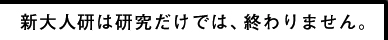

| 2015 08/20 |
イベントを行います。イベントを行います。イベントを行います。 | |
| 2015 07/11 |
記事を更新しました。記事を更新しました。 記事を更新しました。記事を更新しました。 |
|
| 2015 08/20 |
イベントを行います。イベントを行います。イベントを行います。 イベントを行います。イベントを行います。イベントを行います。 |
現在、日本は世界に先駆けて人口の高齢化が進行中です。
日本人が思う以上に世界中が注目しています。
それはグローバルな未来に向けて日本がモデルになる可能性を示しています。どのようなモデルになるのでしょうか。 それを多くの企業・メディアとともに考えていきたいと思います。
そのなかで広告がどんな役割を果たせるのか、具体的に広告・プロモーションを通じて市場に働きかけていきたいと思います。2000年に研究所の前身が設立されて以来15年間のナレッジ開発と市場での実績をもって、また博報堂の横断的なスタッフの力を結集してすすめます。
すでに大人（成人）の2人に1人は50代以上です。
なんと5年後の2020年には大人（成人）の10人に8人は40代以上、つまり大人といえば40代以上（＊）という想定外の世の中になります。
そのときに広告はどうあったらいいのか。いま、急速な高齢化のなかでシニア・中高年という言葉を聞かない日はないという毎日です。
一方で、シニアマーケティングは難しい、シニアでは生活者には響かないという悩みもよく聞きます。どうしたらいいのでしょうか。新大人研では「新大人」ということを提起しており、いま社会的に広がろうとしています
生活者・企業・メディアとともにそれはどうあったらいいのかを考え、共に創っていきたいと思います。
辛い高齢社会もしばしば語られます。それを仕方がないとあきらめるのではなく、そのケアをどうしたらいいか、どう改善できるかを考え、できる行動を共にしていく必要があります。
よりヒューマンな社会をつくる機会といえます。
これから世界中が高齢化をしていきます。
より良き未来は、高齢社会をどうするかを抜きに考えることはできません。
ビジネスやマーケティングの未来も同様です。それを多くの生活者・企業・メディアと共に考え、共に創っていきたいと思います。
広告の力を最大限に活かして、新大人研は多くの人と共に未来の力になりたいと思うのです。
(＊) 成人人口約1億人に対して50代以上人口が約5700万人/「人口推計2014年7月1日」（総務省統計局）より
2020年推計人口成人人口約1億人に対して40代以上人口が約7800万人/日本の将来推計人口
(中位推計：平成24年1月推計：国立社会保障・人口問題研究所)より
急速な少子高齢化は生活者の構造変化であり、新しい市場への大きな機会です。従来は50代以上を、片や介護、片やアクティブシニアというように、
不安だけ、エンジョイだけで見がちでした。
しかしこの二つはクルマの両輪です。
新大人研はナレッジ開発から広告プロモーション展開までを一気通貫させる社会のエンジンです。
未来は生活者が握っています。生活者・企業・メディアともにソーシャルイノベーションを起こしていきたいと思います。
新大人研は、研究・分析を行うだけではなく、マーケティング分野においての実践部隊でありたいと思います。
究極的に目指すべきは、すべての人が人生の最後の最後まで、希望と自尊心を持ち続けられる社会の実現です。
そのために、我々が得意とするアイデア力やコミュニケーション力を用いて、「具体」を次々に示していきたいと考えています。
-
REPORT.17
いま高齢社会は“新しい大人社会”へと大きく変化 その⑨
「孫に甘いお年寄りから、新しい大人世代は“孫友”へ」
-
博報堂と富士通
コクヨS&T共同レポート「介護家族の負担軽減にはコミュニケーションが力になる」
-
REPORT.16
いま高齢社会は“新しい大人社会”へと大きく変化 その⑧
「介護不安高齢者から、
新しい大人は“介護
予防エルダー”へ」
-
世代論の教科書
（東洋経済新報社） -
50歳を超えたらもう年をとらない46の法則
－新しい大人という50＋世代はビジネスの宝庫ー
（講談社） -
団塊の楽園
大阪商大との共著
（弘文堂）
-
若者と未来を創るような大人がふえれば日本は素敵な国になるでしょう。統括プロデューサー
阪本 節郎 -
素敵な日本を繋いでいくために。元気MAXでいきます！主幹
永田 弘道 -
色とりどりの最優秀スタッフがおります。お気軽に、ご相談ください。所長 /
クリエイティブディレクター
梅村 太朗 -
新しい大人は、♪あの素晴らしい愛をもう一度♪何度でも！市場創造コーディネーター
亀谷 政晃
-
誰しもに関係のあるテーマです。自分ごと化、しちゃいましょう。事務局/プロデューサー
井口将人 -
大人世代の方がワクワクするようなコミュニケーションを目指しています。市場創造ストラテジック
プラニングスーパーバイザー
安並 まりや -
大人になるのが楽しみになる国へ。クリエイティブディレクター/
コピーライター
池田 尚子 -
ターゲットと社長、両方の気持ちがわかっちゃうアラ還コピーライター。クリエイティブディレクター
/コピーライター
青田 光章
-
娘世代の視点を活かし、新しい大人マーケットを創っていきたいです。市場創造ストラテジック
プラニングスーパーバイザー
齋藤 真由 -
いろんな人がいて、新大人研は面白いです！メディアプロデューサー
小出 弘幸
- エグゼクティブ
クリエイティブディレクター
村田 徹 - コピーライター
小笠原 健 - 市場創造コーディネーター
福井 健史 - 主任研究員
山本 なつみ - クリエイティブディレクター /
アートディレクター
高橋 宏治
- デザイナー
原野 賢太郎 - 市場創造コーディネーター
柳 貴男 - 市場創造コーディネーター
平 知己 - プロデューサー
山口 実